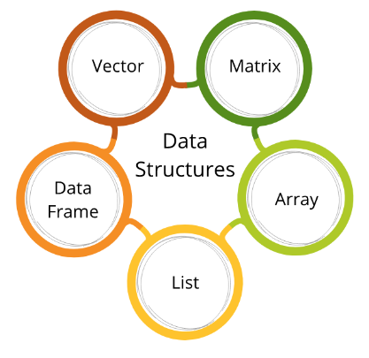
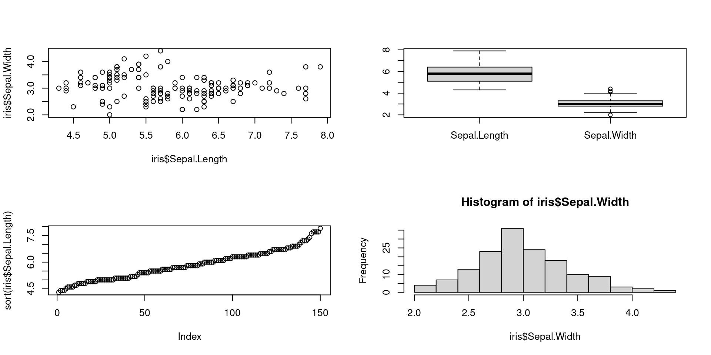

Introducción a R
Análisis espacial con R
Para partir
Motivación
Es quizas el más poderoso ambiente computacional para análisis de datos.
Con
Rpuedes:- leer y guardar archivos,
- manipular y resumir datos
- correr modelos y test estadísticos
- crear elegantes gráficos
- y mucho, mucho más
Las funcionalidades se amplian gracias a miles de paquetes (plug-ins)
Consejos:
- Cuando tengas duda, pruébalo! (Norman Matloff’s)
- Estas aprendiendo un lenguaje, tendras que dedicar mucho tiempo para alcanzar un buen nivel en R, pero vale la pena.
Motivación
¿Por qué utilizar R?
Ren su nucleo, es un lenguaje de programaciónorientada a objetosde alto nivel, lenguaje de programación funcional(Wickham, 2014), y fue especialmente diseñado como una interfaz intercativa a otros softwares (Chambers 2016).Res una herramienta potente que ha tenido un alto crecimiento, en particular para el análisis espacial.Revolución de datos (ej., datos satelitales).
Rpara entender el mundoRes un ambiente y lenguaje de código abierto y multiplataforma para computacion estadística y gráficos.Por todas las ventajas que tiene para análisis de datos (includios espaciales) e investigación reproducible.
Ranking popularidad R
R: lo básico
Sintaxis de R
Ejemplo de script:
- los comentarios
#se utilizan para documentar funciones y su contenido. - en R se tuenen objetos (variables) y funciones
- el operador de asignación
<- - el operador
=para argumentos en una función
Sintaxis de R
Tener en mente
todo lo que hay en
Res un objeto y todo lo que pasa en R es fruto de unafunción
Funciones y argumentos
- Las
funcionesejecutan acciones sobre losargumentos.- synatxis:
nombre_funcion(argumentos) - ejemplo: mean(10)
- synatxis:
- Los
argumentosson los datos de entrada - valores, expresiones, texto, etc.- Le dices a la función que argumentos necesita dentro de los parentesis.
Usa la función ls() para ver todos los objetos definidos. Notar que ls() no toma ningun argumento!
Tipos y estructuras de datos
Tipos de datos

Tipos de datos derivados
Valores faltantes (NA)
[1] NA 1 3 NA[1] NA "a" "b" NA [1] NA TRUE FALSE NADate y date-time
Estructuras de datos
Estructuras de datos:
- vectores
- matrices
- arrays
- data.frame
- listas

Vectores
Hay dos tipos de vectores en R:
Vectores atómicos: homogéneos- Seis tipos: lógicos, integer, double, character, complex, and raw. Vectores tipo integer y double son conocidos como vectores numericos.
Listas: hetereogéneos- son a veces llamados vectores recursivos, por que las listas puede contener otras listas.

Estructuras de datos
Almacena el mismo tipo de dato (numeric, character, logical)
Vectores atómicos
[1] 1 2 3 4[1] "a" "b" "c" "d"[1] TRUE FALSE TRUE TRUEMatrices
Data Frames
columna1 columna2 columna3
1 1 a TRUE
2 2 b FALSE
3 3 c TRUE
4 4 d TRUEListas
Estructuras e control
Condicionales y ciclos
Funciones applys
Reemplazan en muchos casos el uso de ciclos for
apply: aplica funciones sobre matrices o arrays
Crear funciones
Sintaxis
Ejemplos de funciones
Algunas cosas importantes
- R es un lenguaje vectorizado por defecto.
Ejemplo
Aplicar la función log a cada elemento del vector v1.
[1] 3.688879 3.401197 2.302585 3.912023 4.382027Pero lo podemos realizar así:
Algunas cosas importantes
Jerarquia de coherción
Si intentamos mezclar diferentes tipos de datos en un vector.
logical -> integer -> double -> character
Reciclado de vectores
Si intentamos realizar operaciones con vectores de diferentes cantidades de elementos.
1. Indexación
Vector
Paréntesis cuadrado
[para indexaciónParnétesis redondo
(para llamar una función
[1] 5 6 7 8 9 10 11 12[1] 5[1] 3 4 5[1] 7 8 9[1] 7 9 12[1] 7 12 NAVector: reciclado
[1] NA NA NA NA NA NA NA NA NA NA [1] 1 2 1 2 1 2 1 2 1 2Matrix
Obtener un valor [#fila,#columna]
a b c
[1,] 1 2 3
[2,] 4 5 6
[3,] 7 8 9b
5 c
3 Matrix
Varios valores
a b c
[1,] 1 2 3
[2,] 4 5 6
[3,] 7 8 9[1] 2 5 8a b c
7 8 9 a b
[1,] 1 2
[2,] 4 5 b c
[1,] 2 3
[2,] 5 6Matrix
Por nombre de columna
[1] 2 5 8 a c
[1,] 1 3
[2,] 4 6
[3,] 7 9Por un solo valor
[1] 2 5 8 a c
[1,] 1 3
[2,] 4 6
[3,] 7 9Importante notar
[1] 2 5 8 b
[1,] 2
[2,] 5
[3,] 8Data.frame
Por índice numérico
[1] "data.frame" a b c
1 1 2 3
2 4 5 6
3 7 8 9[1] 2 5 8 b
1 2
2 5
3 8Data.frame
Por nombre de columna
No mantienen la estructura
[1] 2 5 8[1] 2 5 8[1] 2 5 8En este caso se mantiene la estructura de data.frame
b
1 2
2 5
3 8 b
1 2
2 5
3 8Técnicas de indexación con which, %in% y match
[1] 10 11 12 13 14 15 16 17 18 19 20 [1] FALSE FALSE FALSE FALSE FALSE FALSE TRUE TRUE TRUE TRUE TRUE[1] 7 8 9 10 11[1] 16 17 18 19 20Técnicas de indexación con which, %in% y match
¿Cómo saber si los valor de un vector j están en un vector x?
[1] 10 11 12 13 14 15 16 17 18 19 20[1] 7 9 11 13[1] FALSE FALSE TRUE TRUETécnicas de indexación con which, %in% y match
[1] 3 4Otra función importante es match
[1] NA NA 2 4No es lo mismo match(j, x) que match(x, j)
[1] NA 3 NA 4 NA NA NA NA NA NA NA2 Algebra
Vector
La suma, resta y multiplicación es elemento a elemento
[1] 1 2 3 4 5[1] 6 7 8 9 10[1] 6 14 24 36 50Vector
La multiplicación vector por escalar
[1] 5 10 15 20 25¿Qué pasa en este caso?
[1] 2 2 4 4 6Vector
¿Por qué no pasa lo mismo acá?
[1] 2 2 4 4 6 6 8 8 10 10Comparaciones lógicas
Para igualdad: ==
[1] 1 2 3 4 5[1] FALSE TRUE FALSE FALSE FALSE[1] TRUE TRUE TRUE FALSE FALSEComparaciones lógicas
y : &
[1] 1 2 3 4 5[1] FALSE FALSE FALSE FALSE FALSEo : |
[1] 6 7 8 9 10[1] FALSE FALSE FALSE FALSE FALSEComparaciones lógicas
Not : !
[1] FALSE[1] FALSE FALSE FALSE TRUE TRUE[1] TRUE TRUE TRUE FALSE FALSEAlgunas funciones
[1] 3[1] 1 2 3 4 5[1] 1.000000 1.414214 1.732051 2.000000 2.236068[1] 2.718282 7.389056 20.085537 54.598150 148.413159Algunas funciones
[1] 1[1] 5[1] 1 5[1] 15[1] 3[1] 3[1] 120[1] 1.581139Números aleatorios
[1] 0.2875775 0.7883051 0.4089769 0.8830174 0.9404673 0.0455565 0.5281055
[8] 0.8924190 0.5514350 0.4566147 [1] 5.715065 4.460916 2.734939 3.313147 3.554338 5.224082 4.359814 4.400771
[9] 4.110683 3.444159Números aleatorios
[1] 0.96302423 0.90229905 0.69070528 0.79546742 0.02461368 0.47779597
[7] 0.75845954 0.21640794 0.31818101 0.23162579 [1] 2.932176 3.782025 2.973996 3.271109 3.374961 2.313307 4.837787 4.153373
[9] 2.861863 5.253815Números aleatorios
[1] 0.2875775 0.7883051 0.4089769 0.8830174 0.9404673 0.0455565 0.5281055
[8] 0.8924190 0.5514350 0.4566147 [1] 5.715065 4.460916 2.734939 3.313147 3.554338 5.224082 4.359814 4.400771
[9] 4.110683 3.444159Matrices
[,1] [,2] [,3]
[1,] 1 2 3
[2,] 4 5 6 [,1] [,2] [,3]
[1,] 1 2 3
[2,] 8 10 12 [,1] [,2] [,3]
[1,] 1 4 9
[2,] 16 25 36 [,1] [,2]
[1,] 14 32
[2,] 32 773 Leer y guardar archivos
Delimitadores
Delimitadores para ruta debe ser / o \\
Error: '\p' es un escape no reconocido en una cadena de caracteres comenziando ""C:\p"[1] FALSEFunciones para cargar y guardar
Sepal.Length Sepal.Width Petal.Length Petal.Width Species
1 5.1 3.5 1.4 0.2 setosa
2 4.9 3.0 1.4 0.2 setosa
3 4.7 3.2 1.3 0.2 setosa
4 4.6 3.1 1.5 0.2 setosa
5 5.0 3.6 1.4 0.2 setosa
6 5.4 3.9 1.7 0.4 setosa[1] TRUEFunciones para cargar y guardar
Sepal.Length Sepal.Width Petal.Length Petal.Width Species
1 5.1 3.5 1.4 0.2 setosa
2 4.9 3.0 1.4 0.2 setosa
3 4.7 3.2 1.3 0.2 setosa
4 4.6 3.1 1.5 0.2 setosa
5 5.0 3.6 1.4 0.2 setosa
6 5.4 3.9 1.7 0.4 setosa [1] "\"Sepal.Length\";\"Sepal.Width\";\"Petal.Length\";\"Petal.Width\";\"Species\""
[2] "5,1;3,5;1,4;0,2;\"setosa\""
[3] "4,9;3;1,4;0,2;\"setosa\""
[4] "4,7;3,2;1,3;0,2;\"setosa\""
[5] "4,6;3,1;1,5;0,2;\"setosa\""
[6] "5;3,6;1,4;0,2;\"setosa\""
[7] "5,4;3,9;1,7;0,4;\"setosa\""
[8] "4,6;3,4;1,4;0,3;\"setosa\""
[9] "5;3,4;1,5;0,2;\"setosa\""
[10] "4,4;2,9;1,4;0,2;\"setosa\""
[11] "4,9;3,1;1,5;0,1;\"setosa\""
[12] "5,4;3,7;1,5;0,2;\"setosa\""
[13] "4,8;3,4;1,6;0,2;\"setosa\""
[14] "4,8;3;1,4;0,1;\"setosa\""
[15] "4,3;3;1,1;0,1;\"setosa\""
[16] "5,8;4;1,2;0,2;\"setosa\""
[17] "5,7;4,4;1,5;0,4;\"setosa\""
[18] "5,4;3,9;1,3;0,4;\"setosa\""
[19] "5,1;3,5;1,4;0,3;\"setosa\""
[20] "5,7;3,8;1,7;0,3;\"setosa\""
[21] "5,1;3,8;1,5;0,3;\"setosa\""
[22] "5,4;3,4;1,7;0,2;\"setosa\""
[23] "5,1;3,7;1,5;0,4;\"setosa\""
[24] "4,6;3,6;1;0,2;\"setosa\""
[25] "5,1;3,3;1,7;0,5;\"setosa\""
[26] "4,8;3,4;1,9;0,2;\"setosa\""
[27] "5;3;1,6;0,2;\"setosa\""
[28] "5;3,4;1,6;0,4;\"setosa\""
[29] "5,2;3,5;1,5;0,2;\"setosa\""
[30] "5,2;3,4;1,4;0,2;\"setosa\""
[31] "4,7;3,2;1,6;0,2;\"setosa\""
[32] "4,8;3,1;1,6;0,2;\"setosa\""
[33] "5,4;3,4;1,5;0,4;\"setosa\""
[34] "5,2;4,1;1,5;0,1;\"setosa\""
[35] "5,5;4,2;1,4;0,2;\"setosa\""
[36] "4,9;3,1;1,5;0,2;\"setosa\""
[37] "5;3,2;1,2;0,2;\"setosa\""
[38] "5,5;3,5;1,3;0,2;\"setosa\""
[39] "4,9;3,6;1,4;0,1;\"setosa\""
[40] "4,4;3;1,3;0,2;\"setosa\""
[41] "5,1;3,4;1,5;0,2;\"setosa\""
[42] "5;3,5;1,3;0,3;\"setosa\""
[43] "4,5;2,3;1,3;0,3;\"setosa\""
[44] "4,4;3,2;1,3;0,2;\"setosa\""
[45] "5;3,5;1,6;0,6;\"setosa\""
[46] "5,1;3,8;1,9;0,4;\"setosa\""
[47] "4,8;3;1,4;0,3;\"setosa\""
[48] "5,1;3,8;1,6;0,2;\"setosa\""
[49] "4,6;3,2;1,4;0,2;\"setosa\""
[50] "5,3;3,7;1,5;0,2;\"setosa\""
[51] "5;3,3;1,4;0,2;\"setosa\""
[52] "7;3,2;4,7;1,4;\"versicolor\""
[53] "6,4;3,2;4,5;1,5;\"versicolor\""
[54] "6,9;3,1;4,9;1,5;\"versicolor\""
[55] "5,5;2,3;4;1,3;\"versicolor\""
[56] "6,5;2,8;4,6;1,5;\"versicolor\""
[57] "5,7;2,8;4,5;1,3;\"versicolor\""
[58] "6,3;3,3;4,7;1,6;\"versicolor\""
[59] "4,9;2,4;3,3;1;\"versicolor\""
[60] "6,6;2,9;4,6;1,3;\"versicolor\""
[61] "5,2;2,7;3,9;1,4;\"versicolor\""
[62] "5;2;3,5;1;\"versicolor\""
[63] "5,9;3;4,2;1,5;\"versicolor\""
[64] "6;2,2;4;1;\"versicolor\""
[65] "6,1;2,9;4,7;1,4;\"versicolor\""
[66] "5,6;2,9;3,6;1,3;\"versicolor\""
[67] "6,7;3,1;4,4;1,4;\"versicolor\""
[68] "5,6;3;4,5;1,5;\"versicolor\""
[69] "5,8;2,7;4,1;1;\"versicolor\""
[70] "6,2;2,2;4,5;1,5;\"versicolor\""
[71] "5,6;2,5;3,9;1,1;\"versicolor\""
[72] "5,9;3,2;4,8;1,8;\"versicolor\""
[73] "6,1;2,8;4;1,3;\"versicolor\""
[74] "6,3;2,5;4,9;1,5;\"versicolor\""
[75] "6,1;2,8;4,7;1,2;\"versicolor\""
[76] "6,4;2,9;4,3;1,3;\"versicolor\""
[77] "6,6;3;4,4;1,4;\"versicolor\""
[78] "6,8;2,8;4,8;1,4;\"versicolor\""
[79] "6,7;3;5;1,7;\"versicolor\""
[80] "6;2,9;4,5;1,5;\"versicolor\""
[81] "5,7;2,6;3,5;1;\"versicolor\""
[82] "5,5;2,4;3,8;1,1;\"versicolor\""
[83] "5,5;2,4;3,7;1;\"versicolor\""
[84] "5,8;2,7;3,9;1,2;\"versicolor\""
[85] "6;2,7;5,1;1,6;\"versicolor\""
[86] "5,4;3;4,5;1,5;\"versicolor\""
[87] "6;3,4;4,5;1,6;\"versicolor\""
[88] "6,7;3,1;4,7;1,5;\"versicolor\""
[89] "6,3;2,3;4,4;1,3;\"versicolor\""
[90] "5,6;3;4,1;1,3;\"versicolor\""
[91] "5,5;2,5;4;1,3;\"versicolor\""
[92] "5,5;2,6;4,4;1,2;\"versicolor\""
[93] "6,1;3;4,6;1,4;\"versicolor\""
[94] "5,8;2,6;4;1,2;\"versicolor\""
[95] "5;2,3;3,3;1;\"versicolor\""
[96] "5,6;2,7;4,2;1,3;\"versicolor\""
[97] "5,7;3;4,2;1,2;\"versicolor\""
[98] "5,7;2,9;4,2;1,3;\"versicolor\""
[99] "6,2;2,9;4,3;1,3;\"versicolor\""
[100] "5,1;2,5;3;1,1;\"versicolor\""
[101] "5,7;2,8;4,1;1,3;\"versicolor\""
[102] "6,3;3,3;6;2,5;\"virginica\""
[103] "5,8;2,7;5,1;1,9;\"virginica\""
[104] "7,1;3;5,9;2,1;\"virginica\""
[105] "6,3;2,9;5,6;1,8;\"virginica\""
[106] "6,5;3;5,8;2,2;\"virginica\""
[107] "7,6;3;6,6;2,1;\"virginica\""
[108] "4,9;2,5;4,5;1,7;\"virginica\""
[109] "7,3;2,9;6,3;1,8;\"virginica\""
[110] "6,7;2,5;5,8;1,8;\"virginica\""
[111] "7,2;3,6;6,1;2,5;\"virginica\""
[112] "6,5;3,2;5,1;2;\"virginica\""
[113] "6,4;2,7;5,3;1,9;\"virginica\""
[114] "6,8;3;5,5;2,1;\"virginica\""
[115] "5,7;2,5;5;2;\"virginica\""
[116] "5,8;2,8;5,1;2,4;\"virginica\""
[117] "6,4;3,2;5,3;2,3;\"virginica\""
[118] "6,5;3;5,5;1,8;\"virginica\""
[119] "7,7;3,8;6,7;2,2;\"virginica\""
[120] "7,7;2,6;6,9;2,3;\"virginica\""
[121] "6;2,2;5;1,5;\"virginica\""
[122] "6,9;3,2;5,7;2,3;\"virginica\""
[123] "5,6;2,8;4,9;2;\"virginica\""
[124] "7,7;2,8;6,7;2;\"virginica\""
[125] "6,3;2,7;4,9;1,8;\"virginica\""
[126] "6,7;3,3;5,7;2,1;\"virginica\""
[127] "7,2;3,2;6;1,8;\"virginica\""
[128] "6,2;2,8;4,8;1,8;\"virginica\""
[129] "6,1;3;4,9;1,8;\"virginica\""
[130] "6,4;2,8;5,6;2,1;\"virginica\""
[131] "7,2;3;5,8;1,6;\"virginica\""
[132] "7,4;2,8;6,1;1,9;\"virginica\""
[133] "7,9;3,8;6,4;2;\"virginica\""
[134] "6,4;2,8;5,6;2,2;\"virginica\""
[135] "6,3;2,8;5,1;1,5;\"virginica\""
[136] "6,1;2,6;5,6;1,4;\"virginica\""
[137] "7,7;3;6,1;2,3;\"virginica\""
[138] "6,3;3,4;5,6;2,4;\"virginica\""
[139] "6,4;3,1;5,5;1,8;\"virginica\""
[140] "6;3;4,8;1,8;\"virginica\""
[141] "6,9;3,1;5,4;2,1;\"virginica\""
[142] "6,7;3,1;5,6;2,4;\"virginica\""
[143] "6,9;3,1;5,1;2,3;\"virginica\""
[144] "5,8;2,7;5,1;1,9;\"virginica\""
[145] "6,8;3,2;5,9;2,3;\"virginica\""
[146] "6,7;3,3;5,7;2,5;\"virginica\""
[147] "6,7;3;5,2;2,3;\"virginica\""
[148] "6,3;2,5;5;1,9;\"virginica\""
[149] "6,5;3;5,2;2;\"virginica\""
[150] "6,2;3,4;5,4;2,3;\"virginica\""
[151] "5,9;3;5,1;1,8;\"virginica\"" Funciones para cargar y guardar
Otras funciones
[1] "/home/francisco/Documentos/R-Projects/DEINE114-2024/Unidad1"[1] "/home/francisco/Documentos/R-Projects/DEINE114-2024/Unidad1/files"[1] "00_presentacion_profesor_curso.qmd" "01_breve_intro_R.qmd"
[3] "01_breve_intro_R.rmarkdown" "02_datos_espaciales_R.qmd"
[5] "03_manejo_datos_tidyverse.qmd" "04_mapas_con_tmap.qmd"
[7] "data" "data.csv"
[9] "figs" 4 Exploración de datos
Summary y Table
Sepal.Length Sepal.Width Petal.Length Petal.Width Species
1 5.1 3.5 1.4 0.2 setosa
2 4.9 3.0 1.4 0.2 setosa
3 4.7 3.2 1.3 0.2 setosa
4 4.6 3.1 1.5 0.2 setosa
5 5.0 3.6 1.4 0.2 setosa
6 5.4 3.9 1.7 0.4 setosa'data.frame': 150 obs. of 5 variables:
$ Sepal.Length: num 5.1 4.9 4.7 4.6 5 5.4 4.6 5 4.4 4.9 ...
$ Sepal.Width : num 3.5 3 3.2 3.1 3.6 3.9 3.4 3.4 2.9 3.1 ...
$ Petal.Length: num 1.4 1.4 1.3 1.5 1.4 1.7 1.4 1.5 1.4 1.5 ...
$ Petal.Width : num 0.2 0.2 0.2 0.2 0.2 0.4 0.3 0.2 0.2 0.1 ...
$ Species : Factor w/ 3 levels "setosa","versicolor",..: 1 1 1 1 1 1 1 1 1 1 ...Summary y Table
Sepal.Length Sepal.Width Petal.Length Petal.Width
Min. :4.300 Min. :2.000 Min. :1.000 Min. :0.100
1st Qu.:5.100 1st Qu.:2.800 1st Qu.:1.600 1st Qu.:0.300
Median :5.800 Median :3.000 Median :4.350 Median :1.300
Mean :5.843 Mean :3.057 Mean :3.758 Mean :1.199
3rd Qu.:6.400 3rd Qu.:3.300 3rd Qu.:5.100 3rd Qu.:1.800
Max. :7.900 Max. :4.400 Max. :6.900 Max. :2.500
Species
setosa :50
versicolor:50
virginica :50
[1] setosa versicolor virginica
Levels: setosa versicolor virginicaSummary y Table
setosa versicolor virginica
50 50 50
(0.994,2.48] (2.48,3.95] (3.95,5.43] (5.43,6.91]
setosa 50 0 0 0
versicolor 0 11 39 0
virginica 0 0 22 28Quantile, range, mean
0% 25% 50% 75% 100%
4.3 5.1 5.8 6.4 7.9 [1] 4.3 7.9[1] 5.843333Quantile, range, mean
Si tienen NA
Error in quantile.default(c(iris$Sepal.Length, NA)): missing values and NaN's not allowed if 'na.rm' is FALSE[1] NA NA[1] NAQuantile, range, mean
Si tienen NA
0% 25% 50% 75% 100%
4.3 5.1 5.8 6.4 7.9 [1] 4.3 7.9[1] 5.843333Gráficos (base)
Gráficos (base)
